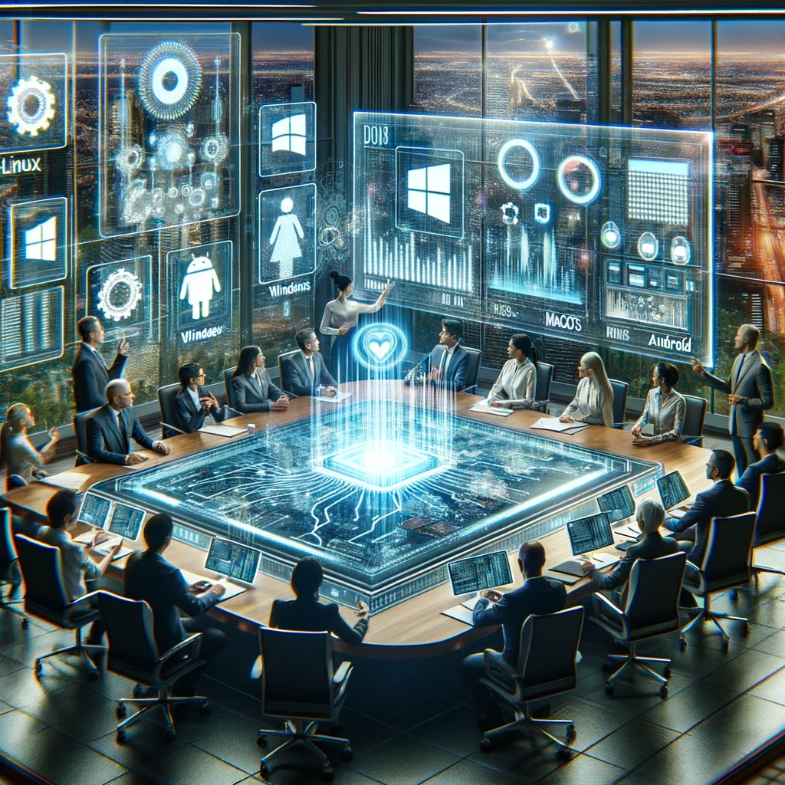

Diseño de un Sistema Informático Municipal
En esta actividad, los estudiantes desempeñarán roles clave en la modernización tecnológica de Futura Urbis, planificando la adquisición de equipos informáticos con un enfoque en presupuesto, sostenibilidad y eficiencia energética.
Realizarán un análisis comparativo entre sistemas operativos propietarios y libres para diferentes departamentos de la ciudad, considerando su idoneidad en cada contexto.
Además, explorarán la Ley de Moore para anticipar y planificar las tendencias tecnológicas futuras en la ciudad, integrando estos conocimientos en su estrategia de desarrollo sostenible.
Para ello prepararan una presentación para la próxima reunión del ayuntamiento según la siguiente guía de trabajo.¡Recuerda!
- Precisión de la información
- Claridad en la información
- Creatividad en el diseño
Elección del Sistema Operativo para Futura Urbis
En una reunión clave del consejo de Futura Urbis, miembros del consejo y expertos en TIC se reúnen para seleccionar el sistema operativo más adecuado para la ciudad, considerando opciones como Linux, Windows, MacOS y Android.
La discusión se centra en comprender las características de cada sistema, su idoneidad para aplicaciones específicas de la ciudad, y la evaluación del software libre y propietario para ofimática, imágenes y videos. Un aspecto fundamental es el análisis del impacto ético, económico y operativo de cada elección.
Preparad una presentación para la próxima reunión del ayuntamiento, para ello sigue la siguiente guía de trabajo.
